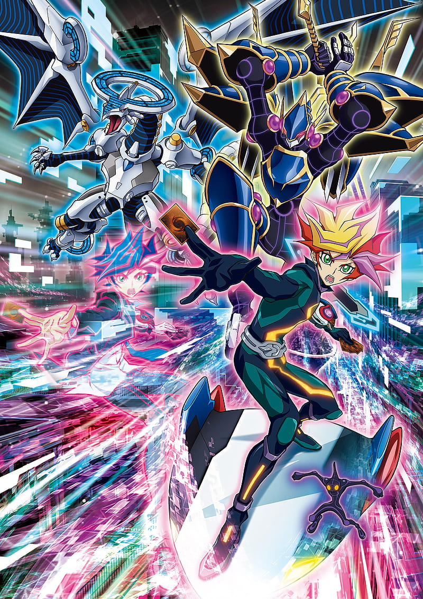

- Serie : Yu-Gi-Oh! Vrains
- Tempordas : 3
- Episodios : 120
- Audio : Japones
- Sub : Español
- Orden : 6
- Peso : 22 GB
- ENLACES DE DESCARGA
- Yu-Gi-Oh Vrains Temporada 1
- Yu-Gi-Oh Vrains Temporada 2
- Yu-Gi-Oh Vrains Temporada 3